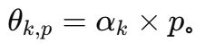
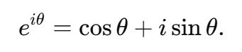
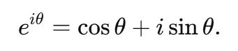
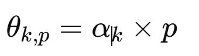
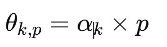
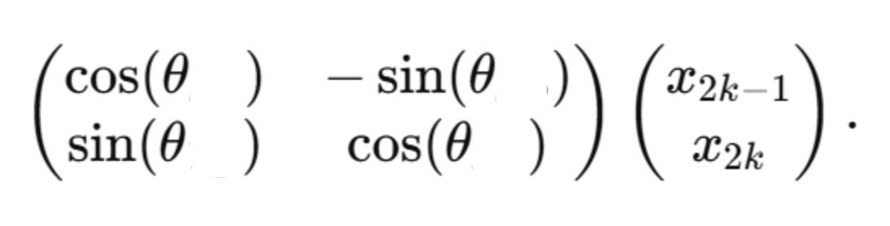
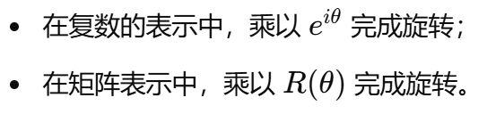
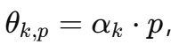

RoPE 里面的θk,p ，k和p，这两个字母分别表示什么意思？
表示在第 k 个子维度、位置 p 上的“总旋转角度”。
在 RoPE（Rotary Position Embedding）中，每个子向量的旋转角度由“位置”和“维度索引”一起决定，
位置索引和维度索引分别决定了什么？
位置索引和维度索引分别决定了什么？
位置（Position） 决定了“这次要旋转多少步，时间步”；序列中越后面的 token，偏转的角度越大。
维度（Dimension）决定了“旋转角度随位置变化的频率/角速度”。常常是不同的 2D 小块对应不同的“基频”。
维度（Dimension）决定了“旋转角度随位置变化的频率/角速度”。常常是不同的 2D 小块对应不同的“基频”。
RoPE（Rotary Position Embedding）所采用的公式思路 是什么？【旋转角度是如何计算得到的？】
对第 k 组维度（2D 小块）有一个基频 αk ，再乘以序列位置 p 得到旋转角度 αk⋅p。
RoPE 是否是简单地“加”或“拼接”位置向量。
不是，而是对向量进行旋转变换。
在 RoPE（Rotary Position Embedding）中，本质是 “多频率 + 随位置增量”叠加，这句话怎么理解呢？ 【谁有不同的频率？增量表示什么意思？】
“每一组 ID 维度（2D子向量）有不同频率 + 不同位置序号导致旋转角度增加”。
RoPE旋转位置编码的它的两点优点是什么？
RoPE 在哪里进行怎么样变换来注入位置信息，相比于传统的绝对位置编码更擅长怎么样？
通过在向量内部做旋转变换来注入位置信息，比传统绝对位置编码更擅长外推到长序列。
在 RoPE（Rotary Position Embedding）中，当 token 处于位置 p 时，这个位置会乘上相应的什么，得到什么？
“基频，角速度” αk，得到旋转角度 ，
在数学上。 旋转矩阵和欧拉公式为什么是等价的？


因为在二维平面上，乘以 eiθ 就是一个逆时针旋转。
传统的绝对位置编码是给序列位置加上一些 什么值，而 RoPE 则更进一步，让 哪两个 向量本身发生旋转，从而体现不同的位置信息。这样在做注意力计算时，会自然而然地保留“什么位置”特性，同时对什么样的序列也有一定泛化能力。
传统的绝对位置编码是给序列位置加上一些 sin / cos 值，而 RoPE 则更进一步，让 Query 和 Key 向量本身发生旋转，从而体现不同的位置信息。这样在做注意力计算时，会自然而然地保留“相对位置”特性，同时对超过训练长度的序列也有一定泛化能力。
RoPE 的旋转角度计算公式是下面，如何理解？


每个2D小块，它的旋转角度是由当前token的位置索引p以及当前维度索引k所对应的频率α所决定的。
RoPE（Rotary Position Embedding）里面第 k 对 2D 维度定义一个基频 α_k 。
当位置是 p 时，旋转角度就是什么？
当位置是 p 时，旋转角度就是什么？
α_k ⋅ p。
在 RoPE（Rotary Position Embedding）中，为什么操作的是2D 子向量，也就是以二维为单位？
RoPE 的“旋转”本质是一个二维平面上的操作（或者说复数乘法），所以我们必须以 2 维为单位。
RoPE 里面，如果只考虑“位置索引”和“维度拆分”，那么同一个位置号、同一对 2D 维度所得到的什么是相同的？
旋转角度。
欧拉公式 是一个等式，公式是下面这样，
θ 和 eiθ 分别表示什么意思？
θ 和 eiθ 分别表示什么意思？
简单说下旋转位置编码，从向量拆分开始？【涉及到欧拉公式和旋转矩阵】
在 RoPE 里，我们先把向量分成多个 组，每组是 2 维，然后对每一组应用一个与“位置索引”相关的特定的旋转矩阵。
而在数学上，这个欧拉公式跟旋转矩阵是等价的。
而在数学上，这个欧拉公式跟旋转矩阵是等价的。
二维旋转矩阵常写作什么样？

为什么说，RoPE 和传统的绝对位置编码是一致的。
只要位置相同且维度相同，RoPE 就会给出相同的旋转。
RoPE 里面，在第一个序列的第一个 token和第二个序列的第一个 token，如果它们都是位置 p=0，并且你看的是同一对维度 (x2k−1,x2k) ，那么它们在 RoPE 中会怎么样？
会应用同样的旋转。
RoPE 里面，如果只考虑“位置索引”和“维度拆分”，那么同一个位置号、同一对 2D 维度所得到的“旋转角度”是否是相同的？
是的。
在 RoPE（Rotary Position Embedding）中，P表示什么意思，P越大什么越大。
P表示token在序列里面的位置。
位置 p 越大，旋转角度就越大，从而体现出对相对位置信息的编码。
位置 p 越大，旋转角度就越大，从而体现出对相对位置信息的编码。
在 RoPE（Rotary Position Embedding）中，对每一个 2D 子向量，为什么要 2D？
因为一个维度是标量，无法单独“旋转”；要在平面（2D）里，才能做出类似 cosθ / sinθ 的旋转变换。
RoPE 的旋转角度 是由位置索引 & 维度索引 这两个索引决定的。维度索引 k 索引会映射成一个什么？
索引会映射成一个“基频”或“角速度” αk 。不同子向量有不同的频率，以覆盖不同的长度尺度。
RoPE 的最小单位是什么？
二维子向量为一组。「2D 组」（成对做旋转）。
对于旋转位置编码来说。 同一个 token 内部，如果我们将向量拆分为多对 (x2k−1,x2k) ，那么每对 2D 维度也会有 各自的 什么不同，从而导致它们的旋转角度不一样。
“基频”或“角速度”。
RoPE 通常是对向量的什么作为一组来做旋转？
每两个维度。2d子向量。
对于旋转位置编码来说。 哪两个因素一起决定了那一对维度的旋转角度 θk,p
位置序号以及维度序号。
位置 p 和 2D 子向量编号 k 。
位置 p 和 2D 子向量编号 k 。
RoPE 的旋转角度 是由位置索引 & 维度索引 这两个索引决定的。位置索引 p 代表什么意思？
代表当前 token 在序列中的位置，随着序列往后（p 增加），旋转角度也随之变大。
RoPE 的旋转角度由 什么 索引 × (什么索引对应的什么)’ 决定”，再把这个角度应用到向量的相应哪里？
位置索引，维度索引对应的频率， 2D 子空间。
将旋转位置编码简单地想成什么？【哪一个向量？旋转一定角度，这个角度是什么乘上什么得到的?】
“每一个 2D 子向量，都被位置索引乘上一个维度索引对应的频率系数旋转一定角度，这样就在向量里隐含地编码了它‘在序列中位于第几步’的信息。”
RoPE 的旋转角度 是由位置索引 & 维度索引 这两个索引决定的。维度索引 k 代表什么意思？
表示在高维向量中，第 k 个 2D 子向量（或说是第 k 对维度）。
RoPE 里面，如果只考虑“位置索引”和“维度拆分”，那么同一个什么、同一对什么？所得到的旋转角度是相同的？
同一个位置号，同一对2D 维度。
RoPE 属于相对位置编码吗？
它的实现形式更像*绝对”编码（因为给每个位置一个旋转角），但通过在注意力中点积的角度差，模型可以学到相对位置关系 。所以可以看成“兼具相对位置感的绝对位置编码”。
旋转位置编码的两种好处是什么？ 【在计算什么的时候保留相对位置信息。以及在处理什么的时候，比绝对位置编码更稳定。】
旋转位置编码能够让模型更好地在自注意力中保留相对位置信息，而且在处理长序列时比传统绝对位置编码更稳定。
二维旋转矩阵常写作
表示什么意思？
表示什么意思？

RoPE 的旋转角度是θ ，那么2D 子向量(x2k−1,x2k)，是如何做旋转操作的？对应的公式是什么？

RoPE 就是在每个 什么上做一个“随什么增长的旋转角度”变换，从而在向量内部带入了什么信息。
RoPE 就是在每个 2D 子向量上做一个“随位置增长的旋转角度”变换，从而在向量内部带入了位置信息。
RoPE 的旋转角度 是由哪两个索引决定的？
位置索引p & 维度索引k。
二维旋转矩阵常写作
这个矩阵为什么与欧拉公式是一体两面？
这个矩阵为什么与欧拉公式是一体两面？

二者都反映了同样的几何变换：将平面中的点围绕原点旋转 θ。
二者都反映了同样的几何变换：将平面中的点围绕原点旋转 θ。
把一个二维向量 (x,y) 当作复数 z=x+iy，那么把 z 乘以 eiθ，得到的新复数就是什么？
原向量逆时针旋转 θ 后的结果。
RoPE 对应的英文全称和中文名称。
Rotary Positional Encoding，旋转位置编码。
对于旋转位置编码来说。第 k 组维度在位置 p 时的旋转角度，计算公式是什么？

RoPE 兼具部分相对位置编码的优点，但它在实现层面，还是为每个绝对位置分配一个什么？
旋转角。